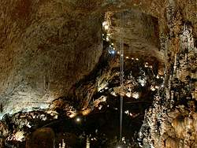

Friuli Venezia Giulia
|  |
| Image: in the hugest cavern of the World, Grotta Gigante. |
Friuli Venezia Giulia is a region to the northeast of Italy, with borders to
The karst around Trieste is the Classical Karst, a large limestone plateau, which is heavily karstified. When the name was introduced, there was no border and all belonged to the Austro-Hungarian Empire. Today part of the karst belongs to Italy, the other part to
The Reka river has its source at the feet of the highest karst peak, the Sneznik (Snow Mountain, 1,986m asl). It crosses a low plain compsed of soft flysh rocks, before it enters the karst below Škocjan through the
 Škocjanske JameGrotta Gigante
Škocjanske JameGrotta GiganteBut Friuli Venezia Giulia has more karst areas. There are several units of the southern limestone Alps on both sides of the river Tagliamento. The eastern part, around Udine has various caves, among them two impressive show caves. The eastern part around Gemona is infamous for the huge earthquakes which happen in this area rather often, in geologic terms. The last huge earthquake happened 1976.
In 1997 the cadastre of Friuli Venezia Giulia listed 6,073 caves, 3,311 in Friuli and 2,762 in Venezia Giuulia.
 Caverna del Dio Mithra
Caverna del Dio Mithra- Grotta Gigante
 Kleine Berlin
Kleine Berlin- Grotta Nuova di Villanova
- San Giovanni d'Antro
 Timavo resurgence
Timavo resurgence- Le Grotte Verdi di Pradis
- Abysso Vigant
- See also
 Tourist Caves
Tourist Caves- Gruppo Triestino Speleologi
- Federazione Speleologica Triestina
- Federazione Speleologica Regionale del Friuli - Venezia Giulia
- The Tagliamento River
- Landschaft und Höhlen im Veneto, I
(visited: 28-JUL-2011)
by Franz Lindenmayr.
(
 )
) - Landschaft und Höhlen des Triester Karstes
(visited: 28-JUL-2011)
by Franz Lindenmayr.
()